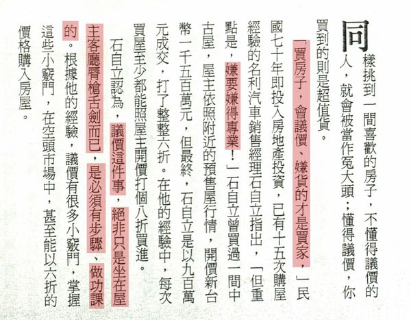
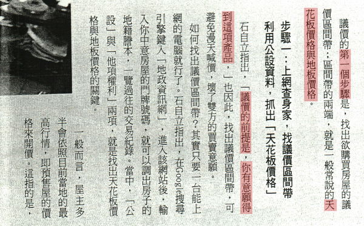
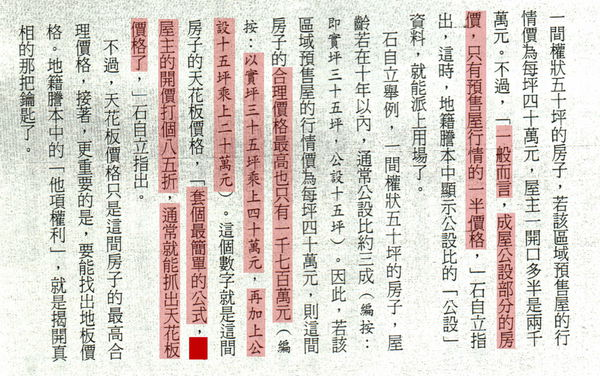
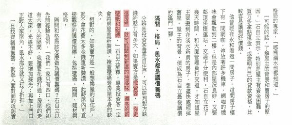
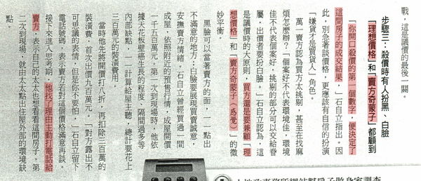

想買房子，如何談價(議價)?

整理資料，翻到之前的 商業周刊(2008.9.1086期) 看到一篇 達人教你如何買屋殺價 雖說時間有一點久遠 當時候也不像現在方便 可以直接查詢 “內政部實價登錄” 簡單知道屋主購屋的成本多少 抓出天花板和地板價格 也就是屋主可能可以接受的成交價位區間 不過方式可以參考看看 [ 下有放大版 ]
以下為內容截圖，附上一些些小編淺見 電腦看不清楚內容，麻煩請放大倍數看( 按住ctrl+滑鼠滾輪 )

市場多頭、或是買氣好的時候才會有預售屋，通常是台北比較多，高雄則是近幾年才又出現 至於打幾折的部分，例如中古屋，有的開價比較便宜，有的比較貴 如果通通套用一率打幾折，是比較困難成交， 所以要買屋也要上網作功課，尤其現在成交都必須實價登錄 看看喜歡的房屋是行情價高一些，還是高出許多 再來研究怎麼出價

天花板價格 通常就是 “投資客” 希望賣到的最高價位 地板價格 就是 “投資客” 可以接受的最低價位
如果沒有意願想買這間房屋，但想要了解一下行情 也可以直接問仲介，屋主大概多少願意出售，想知道參考一下 也讓仲介知道這間房屋，妳沒有要進一步洽談 另外再找其他的，通常可以問個大概參考價位 畢竟現在是服務取勝的年代 千萬不要不喜歡，又讓仲介以為你是想進一步洽談 然後讓仲介瞎忙，最後認為你是澳客 這樣以後有好房子、便宜房子或急售的房子 仲介也不會想介紹給你

要和屋主進一步洽談，還是老話一句，先做功課 多做功課才能知道你想買的房屋合不合乎行情 舉例，如果行情1000萬，有人開價2000萬 打85折你會買嗎?
以中古屋為例，因為購屋時間點不同，取得的成本也不同 民國八十幾年和九十幾年，屋主取得的購屋成本就不同 所以才會有中古屋，有的屋主售價較高 不過一般中古屋 8.5折 ~ 9折 是能抓出天花板價格 (因為文章內容是以投資客為例，只是賺多賺少差別) (自住客又不太一樣) 市場上，像小編也常常會遇到自用的屋主會說 [ 當初就買那麼貴了，怎麼可能賠錢賣 ] 但是 屋主原本買屋的成本高，就一定會賣那麼高價嗎 這也不一定 小編也有遇過屋主當初取得房屋成本一千八百多萬 後來成交價一千二百萬
因為文章舉例為 “台北投資客” 小編說一下自住客又會有一些差異 就是情感層面 投資客買屋，有一些根本不看格局採光，有人接手就好 因為不是自己要住，小細節，有的也不在意 但是自住客會考慮的層面比較多 採光、通風，鄰居、學區……..等等 一個在裡面住了20年房屋的屋主， 跟一個只是考慮短時間要賺多少錢的屋主 這兩者想比，相信各位也會知道差異在哪
ˋ 
有些買方不做功課就強調自己貸款少，或不用貸款，想藉此來跟屋主談價錢 這部分要看個案，因為不是每個屋主都有貸款，或有資金困難 小編個人是認為效果不大 現金買賣跟貸款買賣，過戶時間差一到二個禮拜，時間也沒差多少
[ 早期買屋，沒有履約保證，屋主簽約、備件、完稅、交屋 每個部分都可以直接拿到現金，有差別， 現在款項要進履約專戶，結案才讓屋主領完全部款項 ]
除非遇到真的急需用錢屋主，而且買方願意現金不進履約保證專戶 但這個風險需要買方自己負責 案例 [屋主急需用錢，屋主跟買方協議動用款項不進履約專戶 過戶辦到一半，房屋遭到查封法拍，屋主已經把錢花掉 雙方最後只能上法院] 當然也是有一些屋主急用錢案例，成功買賣成交 但是如果沒有經驗的買家，因為會牽扯範圍比較廣 (如卡債、信貸、私人借貸等一些隱藏風險) 奉勸還是不要比較好，風險相對高 下次有機會再跟大家分享”查封中房屋買賣”成交案例

之前小編有發生過買賣雙方都已經談好價格 約定好要簽約 誰知道簽約當天，買方還在玩黑白臉的遊戲 屋主當場翻臉走人 房價當時已經談到很便宜 屋主也已經願意忍痛售屋
希望這篇文章對要買房的各位朋友有說幫助
[房地王/胡兆陽報導]
▲現階段買房子，不管什麼產品都要記得殺價。
根據房仲業者的調查顯示，現在賣房子的屋主有34.5%的比例只想降5%、另外有34.7%的屋主可以接受賣屋降價5~10%的事實。換句話說，有7成的屋主願意降10%以內的價格來賣屋，甚至還有將近兩成的屋主不願降價賣屋，願意降10%以上的房價來賣屋的比例只有8.8%。
這個數字看在買方眼裡，怎麼可能相信：在房市景氣如此糟糕的時刻，殺價只殺個開價的10%而已？房產業者表示，許多購屋的民眾明明看到好的房子、心裡也很想買，但是卻因為殺價的問題得罪了賣方（或建商），使得賣方寧願再多花一點時間找下一個買方，也不願在「受辱」的情況下賣屋。因此建議買方，如果真的找到想買的房子，進入殺價的程序時，一定要謹記「三要、三不」的殺價原則。
首先「三要」是：要做功課、要和諧議價、要展現誠意。「要做功課」是指議價之前，一定要先暸解附近房屋的成交價行情，除了可以請房仲業提供這些資料之外，自己要也勤勞一點連上內政部實價登錄網站，去看這裡實價登錄的每坪成交價行情是多少？才不會被騙而買貴了，還去謝謝對方真慷慨、讓你殺價這麼多。
「要和詣議價」是指，維持好買賣雙方的關係才是成功殺價的第一步，因為從來沒有發生：買賣雙方鬧得很僵，但是買方又能成功殺價到令人滿意的價格。維持和諧的議價場面包括注意說話時的語調、儀態，還要儘量說好話、取悅賣方，細節上還包括不要找太多親友加入議價，以免人多意見多、壞了場面的氣氛。
買賣雙方能夠到「坐下來談價錢」的階段，基本上都已經算是有誠意，但是要讓買方願意讓價，還要再更多「展現誠意」的動作才行，例如立刻拿部分簽約金給買方、或是施以「全年地價稅、房屋稅概括承受」等小惠，都是展現買方誠意的方法。再看另外五種殺價技巧
至於「三不」是指： 不要嫌房子爛－雖然有句俗話說：「嫌貨才是買貨人。」但那是指買方還在看屋階段、還沒有決定要買的時候。如果買賣雙方已經到了議價的階段時，買方不斷地「嫌貨」只會讓對方厭惡、破壞議價的氣氛。
不要擺高姿態－不少買屋的人在房市低迷時刻，就擺出高姿態的殺價臉色，殊不知這樣的臉色，和賣方屋主在房市熱絡時、趾高氣昂的臉色，同樣令人厭惡，所以想要多一點殺價空間又擺出高姿態的臉色，怎麼可能會成功呢？
不要殺個沒行情價格－現在的買方會看實價登錄行情，賣方當然也會利用實價登錄的資料，所以買方如果出個沒行情、或是差實價登錄價（相差10%以上）很大的價格，恐怕被認為是個「奧客」的機率會比較大一點。
[房地王/胡兆陽報導]
國內房市走完十年的多頭市場之後，現在不少專家都建議想購屋的民眾可以開始看屋、殺價，甚至傳授殺價的技巧和術語，例如「現金下訂」、「欲擒故縱」等，尤其現在房地合一稅可能「從輕量稅」，房市買氣可望慢慢出籠。
不過，房市的整體氛圍才剛轉向空頭市場，要屋主馬上妥協、接受買方的流血殺價，恐怕也不是只靠這些殺價招數就能輕易達成，所以房產業者建議，現階段殺價的重點是，一開始就要選對下列5大容易「成功殺價」的房子： 「什麼房子最好殺價？」第一個當然是「有缺點的房子」最好殺價。但是既然這間房子有缺點，那又為什麼要大費周章去殺價買它？這是因為別人眼中的房子缺點，對自己而言，不見得是不好的缺點，說不定還是自己喜歡、或是很適合自己居住的優點。如果正好有符合這種情形的房子，就可以好好把握來殺價。
舉例來說，「4」的數字諧音就像「死」，所以4樓的房子比較不受歡迎，但是現在的年輕人百無禁忌，4樓稱不上是有缺點的房子，房價卻因為比較便宜而成為首購族的最愛。 自從政府推出奢侈稅、提高多戶房屋稅、房地合一實價課稅修法等打房措施之後，房市裡的投資客已經所剩不多，等到這個時候才想要賣屋的投資客大多是對房市放棄、希望儘快拿回本錢的人，所以議價的空間往往比較大，如果能夠找到這一類的房子，購屋殺價的成功機率也會比較高。
戶數多的社區，準備要賣的房子也會比較多，賣方爭著要出售的情況下，議價空間當然也就比較大，此刻購屋殺價時就不必太客氣。不過，戶數多的社區也常常伴隨出入份子較雜、居住安寧易受影響等問題，購屋前要先自行衡量利弊得失。 現在90％的屋主都是委託房仲業者賣房子，房屋賣掉後就要被抽取售屋成交金額的3~4%服務費，以成交價1,000萬計算，給房仲業的佣金就達到30萬~40萬元，所以也有屋主採取「自售」方式。此時如果向屋主直接買屋，遇到急著要賣出變現的屋主，就容易因為屋主已經省下房仲服務費，而比較願意接受購屋者的殺價。 新房子一定比舊房子貴，如果想買新屋便宜貨，就要選剛蓋好、正要辦理交屋的新成屋建案。因為一旦交屋、辦完所有權登記之後，屋主就要開始繳房貸、還要受到奢侈稅的限制，所以賣方在這個階段會比較急著脫手，降價賣屋的意願較高，買方成功砍價的機會也就大大增加。